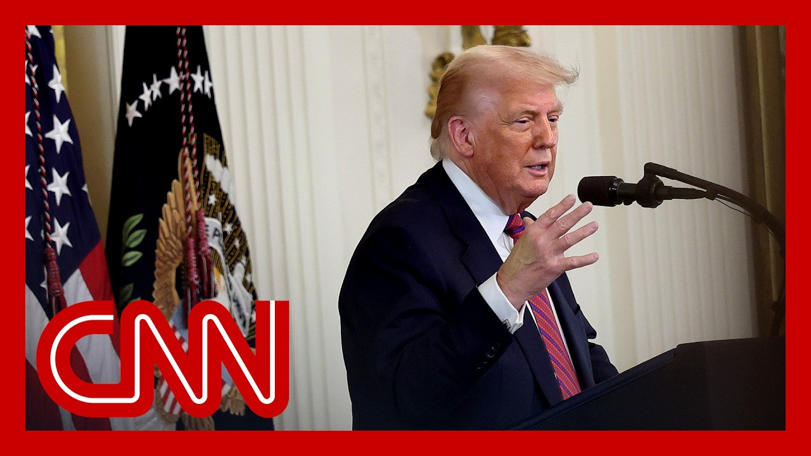

【CNN News 20250722 特朗普第二个任期的前六个月，选民仍然存在分歧｜55%的美国人反对加强驱逐出境，自2月以来上升10个百分点】
Summary: President Trump faces growing backlash over his immigration policies, with 55% of Americans opposing increased deportations, up 10 points since February. White House officials continue defending these policies as politically beneficial despite declining public support. Polls also show disapproval of other key initiatives like ending birthright citizenship (28% support) and ICE budget increases (31% support). Political analysts highlight deepening polarization, with Trump maintaining strong base approval but failing to unify the country. The administration's legislative wins remain overshadowed by controversies like the Epstein case and economic concerns.
摘要： 特朗普总统的移民政策面临越来越多反对，55%的美国人反对加强驱逐出境，自2月以来上升10个百分点。白宫官员继续辩称这些政策具有政治利益，尽管公众支持率下降。民调还显示对其他关键举措的反对，如终止出生公民权（28%支持）和增加ICE预算（31%支持）。政治分析人士指出两极分化加剧，特朗普保持了坚实的选民基础支持，但未能团结国家。政府的立法成果仍被爱泼斯坦案和经济问题等争议所掩盖。

⏱️ Estimated Reading Time: 38 min.
📚 四级生词 📚 六级生词 📚 雅思生词 📚 托福生词 📚 专八生词 📚 SAT生词 📚 考研生词 📚 GRE生词 📚 高考生词 📚 其它生词
President Trump is celebrating six months in centering the White House for his second term.
特朗普总统正在庆祝他第二个任期入主白宫六个月。
but he's also facing some growing backlash to a politely central to his reelection campaign.
但他也面临着对其连任竞选核心议题日益强烈的反对。
And OcNN poll finds that Americans largely oppose the Trump administration's efforts to ratchet up deportations with 55 percent saying the president is going too far.
CNN民调发现美国人普遍反对特朗普政府加强驱逐出境的努力，55%认为总统做得过分。
That up 10 points, as you can see there since February.
自2月以来上升了10个百分点。
OcNN is a land of treem.
CNN是...
It is at the White House in the lane.
...
I wonder if the administration sees any warning signs with these numbers.
我想知道政府是否从这些数字中看到了警示信号。
They're certainly not backing off the policy.
他们显然没有退缩。
They're not.
确实没有。
And I will tell you from my conversations, Jim, with people here at the White House and the broader Trump administration as well, they continue to argue that immigration specifically is a winning issue for them.
根据我与白宫和特朗普政府人士的交谈，他们仍坚称移民问题对他们有利。
I know whenever there's a specific case, just one example being the Albrego Garcia case, they argue that anytime, even when there's controversy over what they are doing, that it's good for them because they believe that immigration more broadly is well received.
每当出现具体案例时，比如Albrego Garcia案，他们认为即便存在争议，这些行动对他们有利，因为他们相信更广泛的移民政策受到欢迎。
Even though, as you pointed out, this new CNN polling and the numbers we're seeing, and I know this matches other polls as well, shows that Americans appetite for these kinds of deportations is waning.
尽管如你所说，CNN新民调和其他数据显示美国人对这类驱逐行动的支持正在减弱。
And I think it's important to remind you that this was the issue the president ran on in 2024, both publicly, but also privately.
需要提醒的是，这是总统2024年竞选的核心议题，无论是公开还是私下。
He said that he believed immigration and specifically his plans to widely and massively ramp up the deportation of illegal immigrants was the most important issue, even more of a priority than the economy.
他曾表示移民问题——特别是大规模驱逐非法移民的计划——是最重要议题，甚至优先于经济。
But just to get back to some of those numbers, he went over how 55% say that they believe the Trump administration has gone too far.
回到数据，55%认为特朗普政府做得过分。
But when you look at some of the specific policy, you look at the increase in the ice budget by billions of dollars in the president's recent, you know, as he reversed with one big beautiful bill, only 31% of Americans say that they support that move compared to 53% who oppose it.
但具体政策方面，比如总统近期通过"一个美丽大法案"增加的ICE数十亿预算，只有31%美国人支持，53%反对。
Another big, of course, policy priority for this administration is trying to end birthright citizenship, something the president tried to do during his first term, but was unsuccessful.
另一项重要政策是终止出生公民权，总统首个任期曾尝试但未成功。
Only 28% of Americans say that they support that 59% oppose.
只有28%美国人支持，59%反对。
So, look, I mean, this is clearly continuing to be, we're looking at them trying to take these new billions of dollars and apply them to more deportations.
显然政府正试图将新增数十亿资金用于更多驱逐行动。
Uncleared, though, whether or not the majority of the American people are going to continue to, you know, see their support for these moves, continue to wane, or if they can somehow remessage some of this, Jim.
尚不清楚多数美国人对这些行动的支持会继续减弱，还是政府能重新包装这些政策。
Listen, and then folks will have to decide whether it's answering to a poll or how they vote in the election, right?
最终人们将通过投票而非民调来表态。
In the midterms when it comes up, Alanitri, thanks so much.
中期选举时...感谢。
Brianna.
...
For more on President Trump's first six months in office, we are joined back in office, I should say.
关于特朗普总统执政六个月更多内容，我们请到...
We're joined now by pollster and communications strategist, Frank Lunds.
民调专家兼传播策略师Frank Lunds。
All right, Frank, what are voters telling you six months in?
Frank，选民六个月来的反馈如何？
It's telling me that there are two Americans.
显示美国存在两个阵营。
It's no longer a red American, a blue America.
不再是红蓝美国。
It's a Trump America or an anti-Trump America.
而是亲特朗普与反特朗普的美国。
Your viewers will react based on how they voted, because in the end, there is no similarity.
观众反应取决于投票倾向，因为两者毫无交集。
There is no overlap.
完全没有重叠。
If you voted for Donald Trump, you like the immigration policy.
特朗普选民支持其移民政策。
You like the legislation you want to cut spending in Washington.
支持削减联邦开支的立法。
You want to have this greater focus on tax cuts or tax relief.
更关注减税政策。
And if you voted against them, you think this is the end of democracy as we know it.
而反对者则认为这终结了民主制度。
It really is that stark.
分歧确实如此尖锐。
And I don't see any commonality, any, any cross-pressure that brings people together.
我看不到任何共识或能让人们团结的因素。
So Brianna, this is only the beginning.
这只是开始。
Six months, we got three and a half years to go.
六个月过去，还有三年半任期。
And America is continuing to separate, to divide.
美国将继续分裂。
And the polarization is as great as it has ever been in the last 50 years.
两极分化达到50年来最严重程度。
You also said something here recently to the Atlantic.
你最近向《大西洋月刊》提到...
You did a really interesting interview with them, where you said that voters of Trump's, they're happy with most of what he's doing.
特朗普选民对其大部分政策满意。
They're not happy with how he's doing it.
但对实施方式不满。
And that has really become your refrain, Frank.
这成为你的核心观点。
What do you mean?
具体指什么？
I mean that the language that he uses appeals to his vote.
他的语言吸引其选民。
But his vote is not all of America.
但这些选民不代表全美国。
And he did get right a 50 percent.
他确实获得约50%支持。
But a president should be trying to reach out to more than just 50 percent.
但总统应争取超过50%的支持。
Should be trying to unite the country.
应努力团结国家。
If you look at the issues in this legislature, you go issue by issue.
具体立法议题来看...
And you put it plainly to the public.
向公众明确说明时...
A lot of them have majority support.
许多议题获得多数支持。
But the legislation overall doesn't, because in his communication, he's focused on his base.
但整体立法不受欢迎，因其沟通仅针对基本盘。
And he's doing a great job there.
这方面他做得很好。
But that's not all of America.
但这不代表全美国。
And I, as a poster, have to see 100 percent of the country, not just to 49.9 percent who voted for him.
作为分析师，我需要关注100%的美国人，而不仅是49.9%的投票者。
Yeah.
是的。
And we look at CNN immigration polling here recently.
CNN最新移民民调显示...
55 percent of Americans say the president has gone too far when it comes to deporting immigrants living in the US illegally.
55%美国人认为总统在驱逐非法移民方面做得过分。
That is actually up 10 points in February.
较2月上升10个百分点。
If you break that out a little bit and look at it by party, it is too America's, as you described, just 15 percent of Republican aligned adults say that Trump has gone too far on deportations.
按党派划分，仅15%共和党人认为驱逐行动过分。
What do you think of that?
你如何看待？
I think that he's, and this isn't gold, this is his objective, to reach out to the people voted for him to say you made the right choice.
他的目标是向投票者证明他们做了正确选择。
I kept my promises.
我兑现了承诺。
I kept my word.
我言出必行。
And he's succeeding in that.
这方面他成功了。
But a president, and this is what he had done for the first 30, maybe 45 days.
但总统在前30-45天表现不同。
His numbers were higher than at any time in his career.
当时支持率创生涯新高。
And the reason why were the independence, the people who don't like either political party who are studiously unaligned, and they saw what he was trying to do and they liked it.
因为独立选民——那些不倾向任何政党的人——认可他的努力。
But over the last three months, it's been much more polarizing, much more overt, and some of the rhetoric has been really strong.
但过去三个月变得更两极化和公开化，言辞也更激烈。
And that turns off the people in the center.
这使中间派疏远。
He is succeeding in reaching his people, but he is failing in unifying the country and bringing everyone on board.
他成功联系了支持者，但未能团结全国。
And Brianna, you get about six months.
总统约有六个月蜜月期。
People give you a break.
人们会给予宽容。
This is called the honeymoon period.
这称为蜜月期。
Over the next six months, when Labor Day kicks in, then they're going to start to make decisions that will affect where they vote in 2026.
接下来六个月，劳工节后，人们将开始形成影响2026年投票的决定。
A country is too important for pollsters.
国家问题对民调专家太重要。
It's too important for people like me just to give you the breakdown of left and right and agree and disagree.
不能仅简单分析左右阵营或支持反对。
What is essential is that we find some sort of common ground, so in issues that are so important to Medicaid, taxes, budgets, immigration, that we can have a consensus so we can move forward as a country, rather than moving forward as a political party or an entity.
关键是在医疗补助、税收、预算、移民等重要议题上找到共识，推动国家而非党派前进。
Yeah, you mentioned the honeymoon voters when they decide to marry a candidate for president.
你提到选民"嫁给"总统候选人的蜜月期。
Ultimately, it's Congress who they decide whether or not they're going to divorce, so we will see what happens in 2026.
最终将由国会决定是否"离婚"，我们2026年见分晓。
Frank always great to talk with you.
Frank，感谢交流。
Frank Luntz, thank you so much.
Frank Luntz，非常感谢。
Thank you.
谢谢。
President Trump is marking six months in office saying that the United States is the hottest and most respected country in the world and now that he is back in the White House.
特朗普总统执政六个月，称美国是世界上最受尊敬的国家，如今他重返白宫。
The six month mark comes just as new CNN polling shows that there is growing disfac- dissatisfaction on a central, the central issue he campaigned on.
六个月之际，CNN新民调显示对其竞选核心议题的不满增长。
Immigration in the latest survey, 55 percent say that the president has gone too far when it comes to deporting immigrants, living in the United States illegally.
最新移民调查中，55%认为总统在驱逐非法移民方面做得过分。
That's up 10 points since February.
较2月上升10个百分点。
Joining me right now, CNN political commentator Bukhari Sellers and Republican strategist Doug Hyde.
现在请到CNN政治评论员Bukhari Sellers和共和党策略师Doug Hyde。
Thanks for being here, guys.
感谢参与。
Doug, wins and losses in this first six months.
Doug，这六个月的得失如何？
How do you measure it and what do you see here for President Trump?
你如何评估特朗普总统的表现？
Well, first, I start with the fact that Donald Trump's polling numbers on his personal approval are pretty static.
首先，特朗普的个人支持率相当稳定。
People have made up their minds a long time ago on what they think on Donald Trump.
人们早就对特朗普形成固定看法。
Republicans tend to really love them.
共和党人非常喜爱他。
Democrats tend to really not.
民主党人则相反。
So I start there.
这是我的出发点。
Then I look at what he's done legislatively.
然后看立法成就。
And President usually get their first big ticket item through.
总统通常能在首个任期通过重大法案。
So the one big beautiful bill was probably always going to pass, despite the short margins that they have in both the House and the Senate.
"一个美丽大法案"尽管国会两院优势微弱仍得以通过。
It just means he's had to work a lot harder at it.
这意味着他需要更努力。
He's got wins that he can claim, especially wins that are important to his base.
他取得了一些胜利，特别是对其基本盘重要的胜利。
Good example.
很好例子是...
PBS and NPR, something conservatives were targeting for decades.
PBS和NPR，保守派数十年来一直想削减的项目。
And Trump can say, I'm the one who got it through.
特朗普可以说"是我做到的"。
His challenge is he's not really been able to talk about it all that much because things like the Epstein, memos and documents keep coming up and won't go away.
挑战是他无法多谈这些，因为爱泼斯坦文件等争议不断出现。
And also the reaction to the American public so far, Bacari, to those big wins, if you will, for the president.
再看公众对这些"重大胜利"的反应...
The CNN polling is that Americans largely oppose the administration's scaling up of the deportation program.
CNN民调显示多数美国人反对扩大驱逐计划。
CBS showed something similar that most Americans think that they're deporting more people than they thought it than they thought the administration would.
CBS民调也显示多数人认为驱逐规模超预期。
And then on the big beautiful bill, six and ten in the CBS poll, disapprove of that legislation.
而对"美丽大法案"，CBS民调中六成美国人反对。
Which is why one can honestly wonder why then is the CNN polling show that the Americans view of the Democratic Party is so dismal, this lowest mark for Democrats in the history of CNN polling.
这让人疑惑为何CNN民调显示民主党支持率创历史新低。
Yeah, I think that the election of Donald Trump has proven that Americans have very, very short memories.
特朗普当选证明美国人的记忆非常短暂。
And what I mean by that is Americans are finally realizing what Donald Trump truly meant, what he's about.
美国人终于明白特朗普的真实意图。
And those legislative achievements look at the one big beautiful bill, which I hate grown men and women actually referring to it as such.
那些立法成就——比如"美丽大法案"(我讨厌成年人这么称呼它)——
But there were 11 million people kicked off Medicaid.
导致1100万人失去医疗补助。
That is a campaign promise broken.
这违背了竞选承诺。
He promised to end all the wars around the world.
他承诺结束所有战争。
Where the world is still on fire just last week, Israel fired missiles into Damascus.
但世界仍在动荡——上周以色列导弹袭击大马士革。
We still seeing Ukraine and Russia rage on.
俄乌冲突持续。
We're still seeing and don't have a ceasefire yet with Israel in Iran.
以色列伊朗尚未停火。
I mean, so those promises have been broken.
这些承诺都未兑现。
And then you have an administration that's clouded by the Epstein files.
政府还受爱泼斯坦文件困扰。
And then you go back to that same old sheet of music that he's going to deport Rosie O'Donnell and that he's going to put Barack Obama in prison.
又回到老调重弹——要驱逐Rosie O'Donnell、监禁奥巴马。
Although he is the president who got the Supreme Court to say that presidents are immune for their behavior while they're in the White House.
尽管他是让最高法院裁定总统在任期间行为豁免的总统。
And so it's just there are two things that the American public like.
美国人看重两点：
And this is why Democrats and Republicans both are sucking right now.
这就是为什么两党现在都不受欢迎。
That is they want competency and consistency.
即能力与连贯性。
Donald Trump has proven to be incompetent and lack consistency.
唐纳德·特朗普已被证明无能且缺乏连贯性。
And Democrats don't have a competent or consistent message.
而民主党也没有提出有力或一致的信息。
And so right now I think most Americans are like the hell with both parties.
因此，我认为现在大多数美国人对两党都感到厌烦。
Yeah, let's see.
好吧，让我们看看。
Well, the White House touting its legislative wins as President Donald Trump marks six months in office.
白宫在特朗普总统上任六个月之际吹嘘其立法成果。
Many Americans, though, do seem much more interested in the Jeffrey Epstein files.
然而，许多美国人似乎对杰弗里·爱泼斯坦的文件更感兴趣。
The president is facing bipartisan calls for more transparency around the case.
总统正面临两党要求此案更透明的呼声。
We'll see it in the train back with us this hour.
我们将在本小时的节目中继续讨论。
And there is no doubt this six-month milestone marks a moment for the White House to tout their successes.
毫无疑问，这六个月的里程碑是白宫宣扬其成就的时刻。
That laundry list of wins.
这一连串的胜利。
Somewhat overshadowed by this Epstein controversy.
但某种程度上被爱泼斯坦争议所掩盖。
Just explain what's going on behind closed doors there at the White House.
请解释白宫闭门讨论的情况。
And how they're managing this.
以及他们如何应对此事。
Hey, look, I mean, despite the president's best efforts, Becky, of trying to kill the story to convince his supporters specifically to move on from this, this is still dominating the public's attention.
嘿，听着，尽管总统尽力压制新闻并说服支持者翻篇，但此事仍占据公众注意力。
And you're right.
你说得对。
There are a lot of different issues that the White House had been trying to highlight yesterday to mark his first six months in office.
白宫昨天试图强调多个议题以纪念其执政六个月。
But this story, and particularly the Trump administration's handling of the Epstein case, continues really to have this grip on Americans who are still eager for so much information than what the administration is saying that they will provide.
但此事，尤其是特朗普政府对爱泼斯坦案的处理，仍牢牢吸引着渴望更多信息的美国人。
Now, of course, I would argue that the president as well as his team had really hoped that this Wall Street Journal story last week that had talked about an alleged letter that Trump had sent to Jeffrey Epstein back in the early 2000s would help put some of this to bed.
当然，我认为总统及其团队曾希望《华尔街日报》上周关于特朗普早年致爱泼斯坦的信件的报道能平息部分争议。
One, of course, is that where's a lot of Trump supporters are angry about their handling of the Epstein case.
一方面，许多特朗普支持者对其处理爱泼斯坦案的方式感到愤怒。
They also could be unified.
他们也可能团结起来。
And when the White House tries to argue that a story is fake news, and we did see some of that, some of the president's fiercest supporters coalescing around him once again after that story.
当白宫称某报道为假新闻时，我们看到一些最坚定的支持者再次集结在他周围。
But the president also was hoping that his asking of the Attorney General Pam Bondi to unseal the grand jury testimony from the Epstein case would also help with this.
但总统也希望他要求司法部长帕姆·邦迪公开爱泼斯坦案的大陪审团证词能有所帮助。
Now, one, I think people are calling it a good start.
有人认为这是一个好的开始。
We heard both Republican Congressman Tim Birchett argue it was a good start.
共和党议员蒂姆·伯切特也认为这是一个好的开始。
I had a conversation with Steve Bannon, a legal of the Madagah movement who said it was a good start as well.
我与“马达加”运动的法律顾问史蒂夫·班农交谈，他也认为这是一个好的开始。
But they're worried it would not be enough.
但他们担心这还不够。
And this is what we actually heard from one of the president's lawyers, excuse me, Epstein's lawyers yesterday, Alan Dershwitz, he said in an interview on Fox News that the grand jury testimony was unlikely to contain the information that people are wanting.
总统的律师——抱歉，爱泼斯坦的律师艾伦·德肖维茨昨天在福克斯新闻采访中表示，大陪审团证词不太可能包含公众想要的信息。
And now we're seeing not only Democrats, Republicans as well on Capitol Hill signing on and supporting this effort for a broader vote on unsealing these records.
现在，不仅是民主党人，共和党人也支持国会就公开这些记录进行更广泛的投票。
All to say, this isn't the way that they had been wanting to mark six months.
总之，这不是他们想要纪念六个月的方式。
And this isn't where they want the attention.
这也不是他们希望关注的焦点。
And the president himself kind of recognized that over the weekend when he posted, he said, quote, nothing will be good enough for troublemakers and radical left lunatics making this request.
总统本人在周末发帖时承认这一点，他说：“对于提出此要求的麻烦制造者和激进左派疯子来说，什么都不够。”
It will always be more and more and more.
他们永远会要求更多。
He's saying that despite what he had said about the grand jury, a testimony and wanting to unseal that, it might not be enough for people.
他表示，尽管他提到大陪审团证词并希望公开，但这可能仍无法满足人们。
And we are saying, you know, I'd argue again, even if they do try to move and unseal this, it's up to a court to decide what actually will be publicized.
我认为，即使他们尝试公开，最终由法院决定实际公布的内容。
And so this is a story now that has dominated media attention for roughly two weeks, over two weeks now.
这个故事已占据媒体注意力约两周多。
And it's not showing signs of going away.
且没有消退的迹象。
So unclear kind of where we go from here.
因此，尚不清楚下一步会如何发展。
But again, not exactly what they want to be talking about at this point in time, Becky.
但这确实不是他们此刻想讨论的话题。
Yeah, it's fascinating, isn't it?
是的，这很有趣，不是吗？
Thank you for that.
谢谢你的分析。
I want to go to something else that galvanizes his base.
我想谈谈另一个激发其支持者的话题。
And that would be the issue of immigration.
那就是移民问题。
And the latest CNN polling, 55% of those polled say Trump has gone too far when it comes to deporting migrants living in the US illegally.
CNN最新民调显示，55%的受访者认为特朗普在驱逐非法移民方面做得过火。
That is up 10 points since February.
自二月以来上升了10个百分点。
This is mostly along party lines, we should note.
值得注意的是，这主要按党派划分。
And we just heard from my colleague Priscilla Alvarez about the influence of funding ICE and how that's going to supercharge deportations.
我的同事普莉希拉·阿尔瓦雷斯刚刚谈到ICE资金的影响及其如何加速驱逐。
So to see to bring you back in on that, how do you think that is impacting the president and his standing right now?
你认为这对总统及其当前地位有何影响？
You know, he came in with a lot of momentum.
他上任时势头强劲。
You remember he won the popular vote, the Electoral College, Demson sort of imploded.
他赢得了普选和选举人票，民主党内部崩溃。
And these two issues, the economy and immigration, were what got him a second term.
经济和移民问题助他赢得连任。
And honestly, from where I said he sort of bungled both, a majority of Americans want a solution to illegal immigration.
但老实说，他在两方面都搞砸了，多数美国人希望解决非法移民问题。
They don't like sanctuary cities, they don't like Amnesty.
他们不喜欢庇护城市，也不喜欢大赦。
But this isn't the solution they wanted.
但这不是他们想要的解决方案。
So he's kind of fumbled that momentum in really even disappointing some of his own base on how far he's gone.
因此，他失去了势头，甚至让部分支持者对其做法感到失望。
And same the economy, you know, he promised 200 tariff deals by now.
经济方面，他承诺达成200项关税协议。
We've got four.
目前只有四项。
He hasn't really done anything to lower food prices.
他未采取实质措施降低食品价格。
They're actually up 3% from this time last year.
同比上涨3%。
So these top two issues that gave him all the momentum where a lot of people were with him.
这两个曾让他势如破竹的议题，如今许多人已不再支持。
He's really, I think, kind of squandered for these other sort of loud noises and flashes that have been more distracting.
我认为，他因其他喧闹的干扰而浪费了这些优势。
What do you think about that, Brian?
布莱恩，你怎么看？
Yeah, listen, I think on immigration he's hit exactly where he's wanted to hit.
在移民问题上，他恰恰打中了目标。
Right now you're seeing a little bit of dismay from the electorate of what took place in Los Angeles.
目前选民对洛杉矶事件有些不满。
I suspect those heavy raids.
我猜是那些大规模突袭。
But at the end of the day, the base is very happy with the progress he's making with respect to illegal immigration and illegal aliens.
但归根结底，支持者对其在非法移民问题上的进展非常满意。
The fact that he's storing their jailings, illegal aliens and not just releasing them back in the streets, that is very popular in the base.
他拘留非法移民而非释放的做法深受支持者欢迎。
That's something that didn't happen in the first term to the tens of millions of folks who were able to enter this country through the bypassing or normal process.
这与第一任期时数百万人通过非正常渠道入境的情况不同。
And so I think as long as he continues to hit that mark and make sure that he's picking up the criminals, picking up these folks, keeping them here before we send them back, I think that's going to be positive.
只要他继续专注打击犯罪并妥善处理遣返，这将带来积极效果。
As opposed to really quickly follow up on you because several people that have been deported don't have a criminal record.
但需指出，许多被驱逐者并无犯罪记录。
So do you think that in some ways the administration is going too far?
你是否认为政府在某种程度上做得过火？
I think it's important to realize if you're an illegal alien in the United States seeking a job, that is a felony.
需明确，非法移民在美国求职属重罪。
That in itself is a crime.
这本身就是犯罪。
So when they're finding these people at Walmart, where they're finding these people at Home Depot, those guys are in the process of a committing a crime.
因此，在沃尔玛或家得宝发现的这些人正在实施犯罪。
So that is actually a physical crime.
这是实际犯罪行为。
Whereas, suppose it's not a crime to enter, where it's an infraction to enter the country legally.
而合法入境仅属违规。
But going back to the energy cost, or not the energy cost, the economy, I hear people say, from a year ago inflation is up, or it's not that down to a year ago prices.
回到经济问题，有人说通胀同比上升或未降至一年前水平。
Donald Trump has been in office for six months.
特朗普上任仅六个月。
So if you look at where gas prices have been since when he took office to now, gas prices are markedly lower.
但汽油价格自他就职以来显著下降。
This is the lowest gas prices have been this summer in years.
这是多年来夏季最低油价。
If you look at the price of eggs, from when Trump took office to today, the price of eggs is actually down.
鸡蛋价格也比他上任时更低。
Sure, you can blame Trump for the last six months of Joe Biden, where the economy really went the hell.
当然，有人将拜登最后六个月的经济问题归咎于特朗普。
But the American people aren't blaming Trump for the last six months of Joe Biden.
但民众不会因此责怪特朗普。
They're going to hold him accountable for the first six months.
他们会根据他执政的前六个月评价他。
And if you look at the first six months, inflation is actually down from when he took office to where it is today.
而这六个月的通胀确实比他上任时更低。
So when you look at the key factors that mattered to the American people, he's hitting those benchmarks.
在关键指标上，他达到了民众的期望。
But when you have these conversations on media, whether it's S. Year or the folks, they're trying to say, year in, year out, Donald Trump is not responsible for lack six years of Joe Biden.
但媒体总试图年复一年地宣称特朗普无需为拜登的六年负责。
Joe Biden is responsible, and that's why he's not in office.
责任在拜登，所以他才下台。
Let me just fall, because you said it was a felony.
请澄清，你刚才说这是重罪。
Mr. Meade, please.
米德先生，请说。
Meade President and the United States without authorization is a civil violation, not a criminal offense.
未经授权入境美国属民事违规，非刑事犯罪。
I just want to, but no, but seeking a job in the United States and being employed, that itself is a crime.
但非法移民求职或就业本身是犯罪。
Being in the United States, you break in our immigration laws, that is a, that's an infraction, that's a civil infraction.
违反移民法属民事违规。
But seeking a job, just with our clear view, for the, for the viewers, seeking a job is a crime, if you're really a liar.
但对观众明确一点：非法移民求职属犯罪。
I think you look up with you though quickly on the food prices, because you know, as he talked a lot about that and how that was on top of people's minds when they voted, you are seeing some food prices go up like beef prices.
关于食品价格，牛肉等部分食品价格上涨。
For example, egg prices have gone down.
但鸡蛋价格下降。
Beef prices are harder to come down.
牛肉价格更难下降。
I mean, as someone who, you know, wants to see Trump succeed, as on the Republican team, does that concern you?
作为希望特朗普成功的共和党人，你是否担忧？
Yeah, listen, you're going to be concerned the entire four years, because you don't know what's going to happen with the market.
市场变化难以预测，四年内都会令人担忧。
You don't know whether it's going to be beef prices today, chicken prices next year, or you're even pork.
可能是牛肉、鸡肉或猪肉价格波动。
So you always concerned about these things, but what you want is you want to show a president as they're responsive to what's taking place.
但关键是总统需对市场变化作出反应。
So at the beginning of the year, you had inflation that was, I think, at the end of Biden at 3.1.
年初通胀率为3.1%（拜登任期结束时）。
Today, it's at 2.5.
目前为2.5%。
So it's gone down.
有所下降。
Egg prices have gone down.
鸡蛋价格下降。
Gas prices.
油价也是。
What you want is a president that's responsive to what the market is saying, but ultimately keep making things affordable.
总统需响应市场，同时保持物价可负担。
And over time, since he's been in office in the past six months, he has hold hardly made things more affordable.
过去六个月，他确实让物价更可负担。
All right.
好的。
So we just lost SSE Signal.
我们刚刚失去SSE信号。
Brian Lanza, thank you so much for coming on.
布莱恩·兰扎，非常感谢你的参与。
We appreciate it.
非常感谢。
All right.
好的。
Joining me now is Democratic Congresswoman Jennifer McClellan of Virginia to talk about this and more.
现在连线弗吉尼亚州民主党众议员珍妮弗·麦克莱伦进一步讨论。
Thank you for being here.
感谢你的到来。
So we've been talking about the latest CNN polling.
我们一直在讨论CNN最新民调。
55% of those polls say the president has gone too far when it comes to deporting migrants living in the United States legally, which is up 10 points since February.
55%的受访者认为总统在驱逐合法移民方面做得过火，自二月以来上升10个百分点。
But I should also mention when you break it down between Democrat and Republican, they couldn't be further apart.
但按党派划分，民主党和共和党意见截然相反。
90% of Democratic aligned adults, polls say it's gone too far.
90%的民主党支持者认为过火。
I'll just 15% of Republican aligned adults say the same.
仅15%的共和党支持者持相同看法。
So I guess the question is, do those results surprise you and how do you anticipate the issue of deportation immigration playing into the midterms next year?
这些结果是否令你惊讶？你认为移民驱逐问题将如何影响明年中期选举？
They don't surprise me because what I have seen in my own district in Virginia in particular, early on is a dissatisfaction with the way.
并不惊讶，因我在弗吉尼亚选区早看到民众对政府做法的不满。
And frankly, outrage with the way the Trump administration is doing these mass deportations.
坦率地说，人们对特朗普政府进行大规模驱逐的方式感到愤怒。
In my own district in Chesterfield County, ISIS showing up at the courthouse, detaining people who are showing up for traffic infractions or who have traffic infractions and are showing up for immigration cases.
在我所在的切斯特菲尔德县，ICE出现在法院，拘留那些因交通违规或移民案件出庭的人。
And it's really affecting public safety.
这确实影响了公共安全。
We are seeing our prosecutors, our police chief, our sheriff are all saying this is making people less safe because fewer people are reporting crimes, fewer people are willing to testify or press charges, even citizens who are immigrants because they are afraid of what may happen if they show up at the courthouse.
我们看到检察官、警察局长和警长都说这让人们更不安全，因为报案的人更少，愿意作证或起诉的人更少，即使是移民身份的公民也害怕出庭可能带来的后果。
So you've noticed a change, I guess, in daily life in your district?
所以你认为你所在地区的日常生活发生了变化？
I have.
是的。
I mean, we have a lot of people, a lot of immigrants in a vibrant immigrant community, including citizens who are afraid to show up in public spaces in the courthouse.
我的意思是，我们有很多人，包括公民在内的活跃移民社区成员，现在害怕出现在法院等公共场所。
It is making our communities less safe.
这让我们的社区更不安全。
We have parents who are afraid to send their kids to school, who are afraid to show up in hospitals, who are afraid to go to church because they just don't know what's going to happen.
有父母害怕送孩子上学，害怕去医院，害怕去教堂，因为他们不知道会发生什么。
And obviously, the big tests for this comes when voters have the chance to go to the ballot box in the midterms next year.
显然，真正的考验将在明年中期选举选民投票时到来。
And I want to get your take because looking ahead to that, some of the CNN polling we've done showed 72% of Democrats and Democratic Align Registered voters say they're extremely motivated to vote in next year's election, which is much higher than Republicans.
我想听听你的看法，因为CNN民调显示72%的民主党及倾向民主党的选民表示对明年选举积极性极高，远高于共和党。
But at the same time, just 58% of Democrats and Democratic Align voters had a favorable view of the party.
但与此同时，只有58%的民主党及倾向民主党选民对政党持正面看法。
And so how do you bridge the gap between the enthusiasm, but with also favorability of people they actually want to put in office?
那么如何弥合选民积极性与实际支持率之间的差距？
You know, I think the Democratic Party, we have a lot of work to do, make sure we are meeting voters where they are listening to what they have to say and talking to them about the issues that they want us to take action on.
我认为民主党需要做很多工作，确保我们倾听选民的声音，与他们讨论他们希望我们解决的问题。
And we know that there are a lot of people who are who think we need to fight harder against the Trump administration.
我们知道很多人认为我们需要更坚决地对抗特朗普政府。
And I think the challenge for us is making sure we are communicating what we are doing in every way that people receive information.
我认为挑战在于确保通过各种渠道传达我们的行动。
But what's going to matter is what we're doing on the ground in these districts.
但关键在于我们在这些地区的实际工作。
And when we show up in these districts, meet voters where they are, talking about our vision for the future and what we're going to do to stop the excesses of the Trump administration, you know, we're going to win.
当我们出现在这些地区，与选民交流，分享我们对未来的愿景以及阻止特朗普政府过激行为的计划，我们就会赢。
We've seen that in special election since the Trump administration in Virginia.
我们在弗吉尼亚州特朗普任期内的特别选举中已经看到了这一点。
We've got an election right now.
我们现在正面临一场选举。
It's going to be a canary in the coal mine and we are doing everything we need to do to turn that enthusiasm out, get those voters out to vote in November election.
这将是一次风向标，我们正全力以赴激发选民热情，确保他们在11月选举中投票。